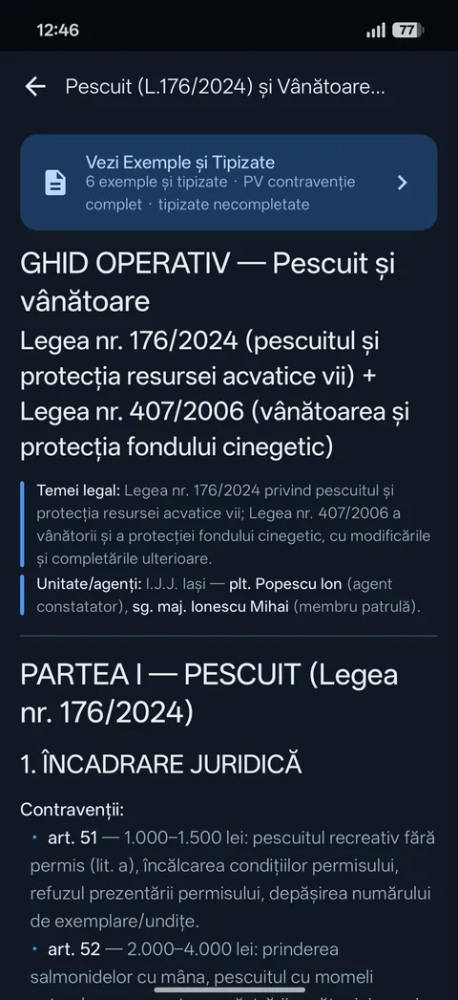
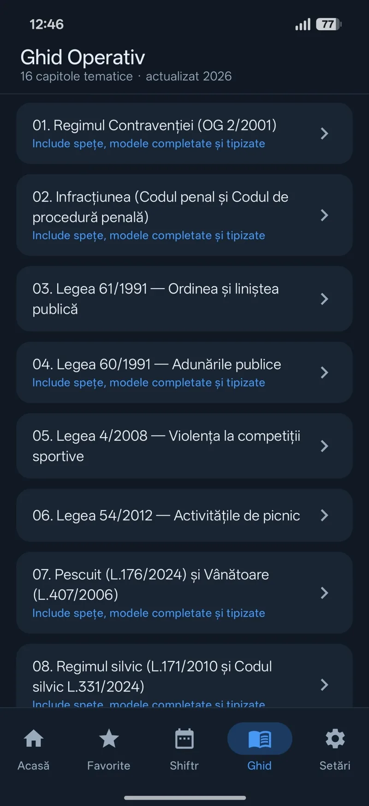
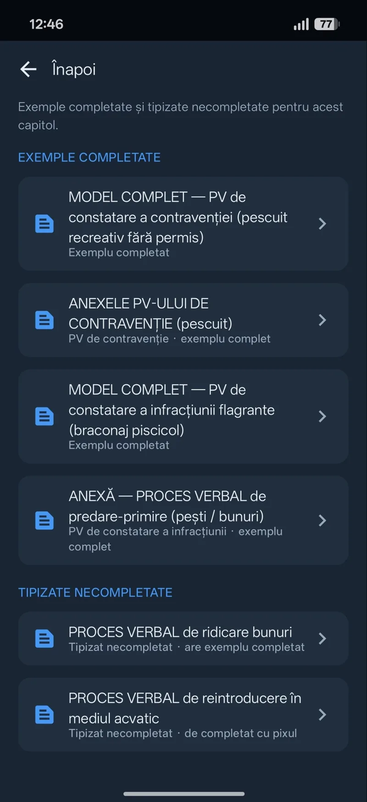
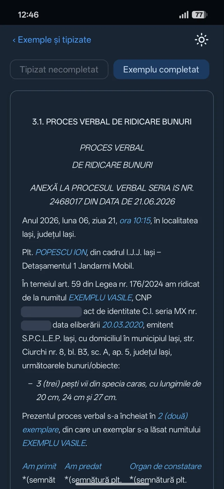
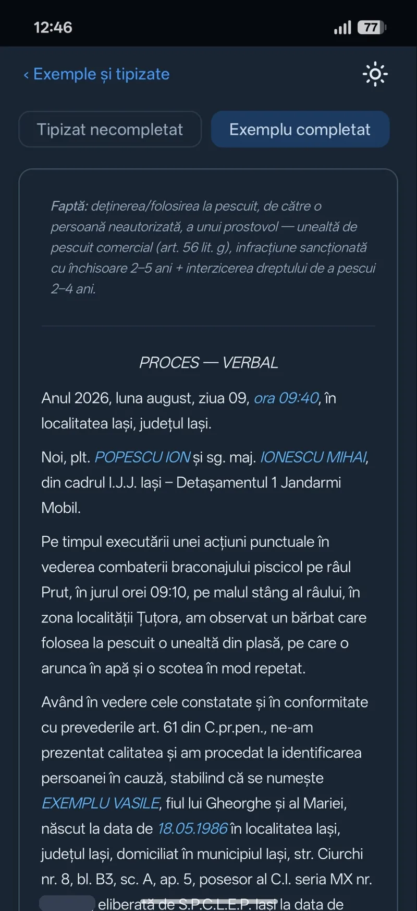
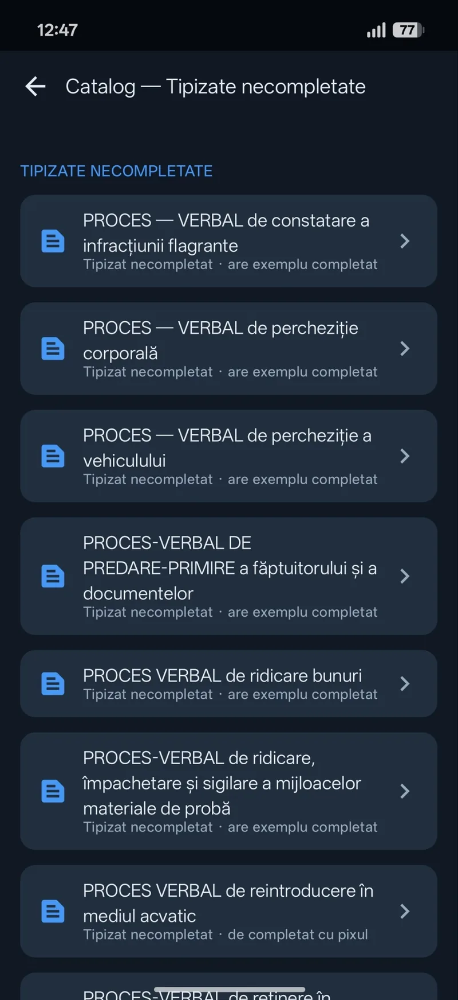

Fișa 0116 capitole
Alegi capitolul
16 capitole tematice, actualizate în 2026. Unele vin cu spețe, modele completate și tipizate.
Capitole tematice cu încadrare juridică. Multe vin cu spețe, modele completate și tipizate.
Cere acces la beta

Fișă după fișă
Derulează și fișele se așază una peste alta. Exemplu real: capitolul de pescuit și vânătoare.
Fișa 0116 capitole
16 capitole tematice, actualizate în 2026. Unele vin cu spețe, modele completate și tipizate.
Fișa 02Art. 51 · 1.000–1.500 lei
Exemplu: pescuit și vânătoare. Temeiul legal, încadrarea și amenzile, pe articole.
Fișa 036 exemple și tipizate
Pentru acest capitol: modele completate și tipizate necompletate, separat.

Fișa 04Art. 59 L. 176/2024
Proces-verbal de ridicare bunuri: data, agentul, bunurile și semnăturile, pe un exemplu fictiv.

Fișa 05Art. 56 lit. g)
Braconaj piscicol pe Prut: de la contextul acțiunii la identificarea persoanei.

Fișa 06Percheziții · predare-primire
Catalog de formulare necompletate. Multe au și un exemplu completat.

Persoanele și datele din modele sunt fictive; numerele de identificare sunt acoperite. Tipul de materiale diferă de la un capitol la altul.
Exemplu completat
Sus, exemplul completat. Jos, tipizatul gol. Speța e fictivă: furt dintr-un hipermarket din Iași, sesizat prin 112.


Nu. Spețele și numele din exemple sunt fictive, ca să vezi cum se completează fiecare câmp.
Nu. E un instrument orientativ. Forma oficială se verifică pe legislatie.just.ro și în Monitorul Oficial.
Da, pentru conținutul descărcat. Actualizările vin prin sincronizare, când ai conexiune.
JAC e în testare închisă, doar pentru Android. Trimite un e-mail și cere acces.
Cere acces la betaSe deschide un e-mail către vladticu100@gmail.com